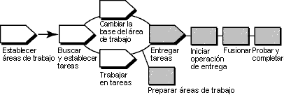

Terminología
Una actividad de UCM (Gestión unificada de cambios) de ClearCase difiere de, y no se debe confundir con, el concepto
RUP de una tarea.
Visión general
En el diagrama siguiente se ilustra el flujo de trabajo de UCM. En esta guía de la herramienta se tratan las áreas
sombreadas.

En el modelo UCM de ClearCase, las modificaciones de los orígenes se capturan en forma de actividades UCM. Una
actividad consta de un conjunto de cambios, que identifica todas las versiones que se crean mientras se trabaja en una
tarea, y un titular descriptivo.
Para poner el trabajo del área de trabajo aislada a disposición del equipo del proyecto, debe entregar versiones
asociadas a las actividades de UCM de la corriente de datos de desarrollo a la corriente de datos de integración del
proyecto.
ClearCase fusiona las versiones de archivo y directorio que se entregan de la corriente de datos de desarrollo con
versiones de la corriente de datos de integración, según se requiera. No obstante, los cambios que se entregan
aún no se convierten en permanentes, lo que permite probar los cambios que se han entregado con otros trabajos de la
corriente de datos de integración. Después de probarlos, se puede cancelar o completar la operación de entrega,
convirtiendo los resultados de la entrega en permanentes.
Esta guía de la herramienta se aplica al ejecutar Microsoft Windows.
La utilización de la operación de entrega de UCM de ClearCase consta de las tareas siguientes:
-
Preparar las áreas de trabajo
-
Iniciar la operación de entrega
-
Fusionar archivos
-
Probar y compilar el trabajo
-
Completar la operación de entrega
Antes de iniciar la operación de entrega, debe preparar las áreas de trabajo. Para ello, debe llevar a cabo las tareas
siguientes:
-
Utilizar la operación de cambio de base de UCM para comprobar si el área de trabajo de desarrollo se ha actualizado
para utilizar las líneas base recomendadas más recientes para el proyecto.
-
-
Para iniciar la operación de cambio de base, en la barra de tareas de Windows, pulse Inicio >
Programas > Software Rational > Rational ClearCase > Explorador de ClearCase.
-
En el Explorador de ClearCase, pulse el botón derecho del ratón sobre el directorio raíz de la vista
de desarrollo y pulse Cambiar la base de la corriente de datos.
-
Siga los pasos que le indica el asistente para el cambio de base de la corriente de datos.
-
El trabajo se debe incorporar para que se pueda enviar. Utilice el programa de utilidad Buscar extracciones
de ClearCase para buscar todas las versiones extraídas.
-
-
Para iniciar el programa de utilidad Buscar extracciones desde el Explorador de ClearCase, vaya al
panel Carpeta y pulse el botón derecho del ratón sobre la carpeta que desea buscar. Seleccione
Buscar extracciones en el menú emergente.
-
Se muestra una lista de los elementos extraídos. Seleccione los elementos que desea incorporar y pulse el
botón derecho del ratón. Pulse Incorporar en el menú emergente.
Si la vista de desarrollo es una vista de instantánea, también debe realizar una operación de actualización para ésta.
Después de preparar las áreas de trabajo, puede iniciar la operación de entrega, que es donde ClearCase integra los
cambios del área de trabajo de desarrollo en el área de trabajo de integración. Los archivos se extraen en la vista de
integración.
Para iniciar la operación de entrega, vaya al Explorador de ClearCase y pulse el botón derecho del ratón sobre el
directorio raíz de la vista de desarrollo. Pulse Entregar de corriente de datos en el menú emergente.
ClearCase fusiona el trabajo de la corriente de datos de desarrollo con el trabajo de la corriente de datos de
integración. Completa fusiones triviales automáticamente y, si encuentra conflictos de fusión, el programa de utilidad
Diff Merge de ClearCase le solicita que resuelva los conflictos.
Asegúrese de que el trabajo que ha entregado es compatible con el trabajo de la corriente de datos de integración,
actualice la vista de integración, que refleja los resultados de la fusión del paso anterior, y compile y pruebe los
archivos.
Además de compilar y probar, es posible que deba llevar a cabo lo siguiente:
-
Editar las versiones extraídas para resolver errores de compilación.
-
Extraer y editar otros archivos.
Consulte la Guía de la herramienta: Actualización del área de trabajo del proyecto
utilizando Rational ClearCase.
Cuando los cambios sean compatibles con el trabajo más reciente del proyecto, complete la operación de entrega desde la
vista de desarrollo en la que la ha iniciado. En este punto también se le ofrece la opción de cancelar la operación.
Este paso incorpora los archivos que son resultado de la operación de fusión y completa otras tareas de mantenimiento.
 Consulte la ayuda
en línea de Desarrollo de software para obtener información detallada sobre cada paso. Consulte la ayuda
en línea de Desarrollo de software para obtener información detallada sobre cada paso.
|